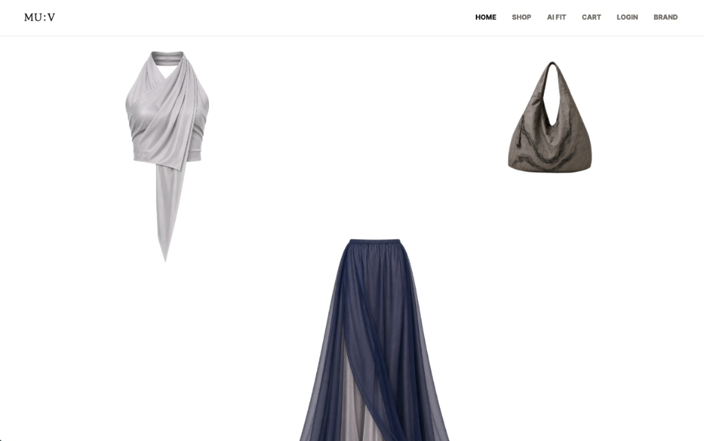
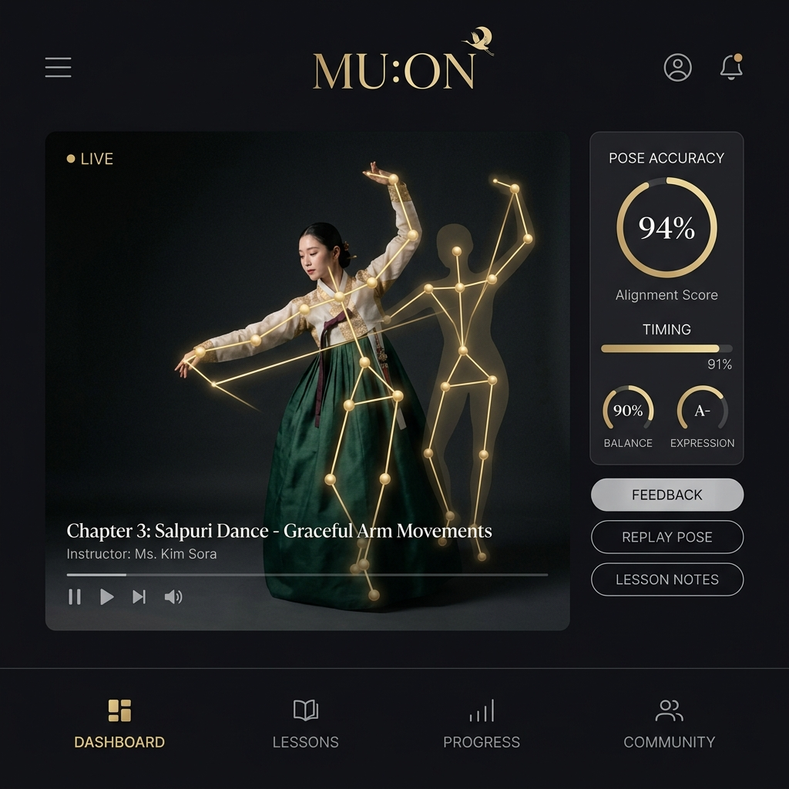
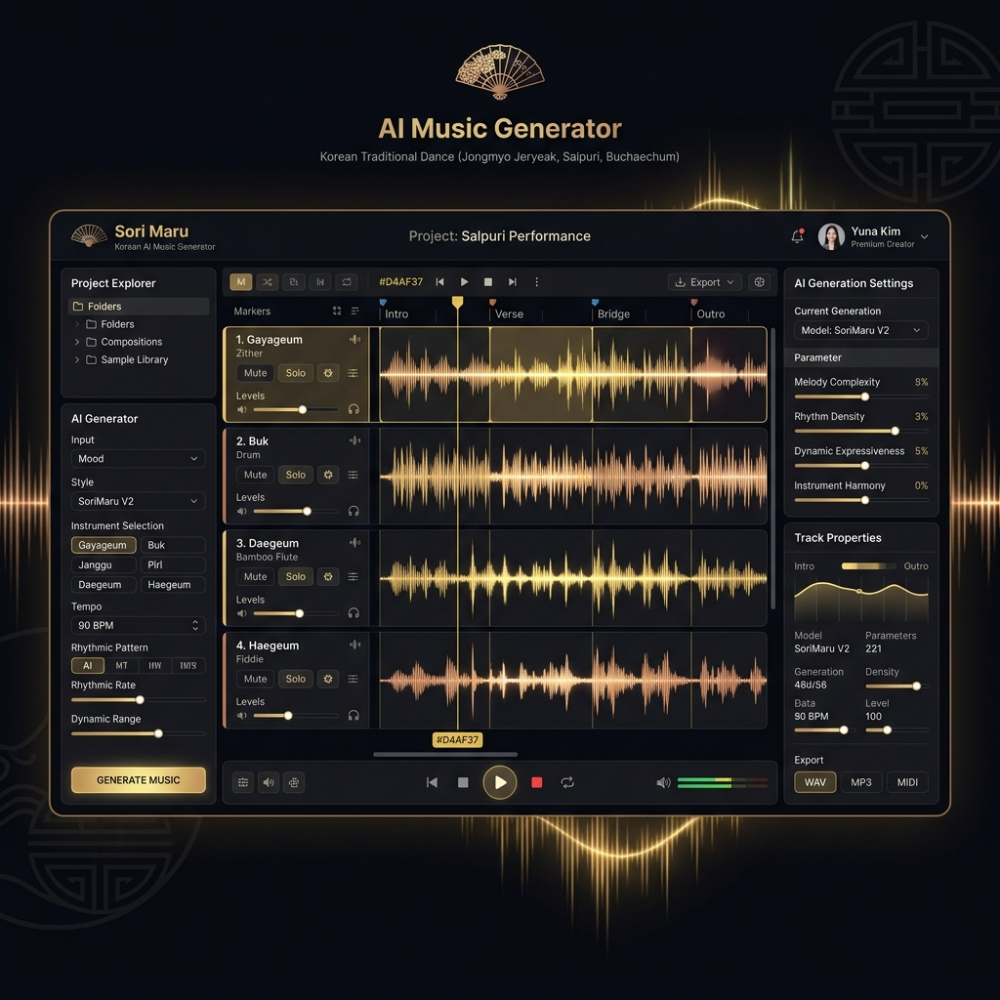

라이프스타일 브랜드 · 첫 프로젝트
MU:V무브

무용수의 하루에서 출발한 한국무용 라이프스타일 브랜드. ‘예쁜 가방’과 ‘큰 가방’ 사이 어디에도 없던, 둘을 함께 담는 가방으로 시작합니다.
- 정중동(靜中動)을 설계 원리로 삼은 첫 가방
- 수묵의 번짐 시그니처 패턴 · 노리개 디테일
- 저채도 팔레트의 가방 · 의상 · 액세서리
- 크라우드펀딩으로 시장 검증
무용수의 몸에서 익힌 미감이 브랜드가 되고, 앱이 되고, 기술이 됩니다.
라이프스타일 브랜드 · 첫 프로젝트

무용수의 하루에서 출발한 한국무용 라이프스타일 브랜드. ‘예쁜 가방’과 ‘큰 가방’ 사이 어디에도 없던, 둘을 함께 담는 가방으로 시작합니다.
앱 · iOS / Android

주머니 속 한국무용 스튜디오. 전문가 영상을 따라하고, 자세 AI의 실시간 피드백을 받으며 성장합니다.
AI · 음악 생성

한국무용에 최적화된 AI 음악 생성기. 가야금, 북 등 전통 악기와 현대적 비트를 조화롭게 융합하여 무용수를 위한 맞춤형 음악을 만듭니다.
웹 · 진단
스토리 기반 12문항으로 8가지 춤 유형을 진단합니다. 가장 가볍고 공유하기 좋은 춤마루의 입구.
테스트 하러 가기API · 툴링
감정 분류 API와 3D 스켈레톤 라벨링 도구. 우리가 쓰는 스택을 그대로 파트너에게 엽니다.
기술 자세히 보기웹 · 웹캠
웹캠으로 기본 동작을 따라하고 나만의 춤 밈을 만듭니다. 브라우저에서 바로.
demo.choomaru.kr